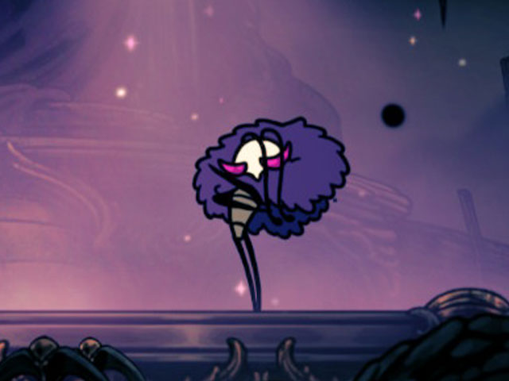
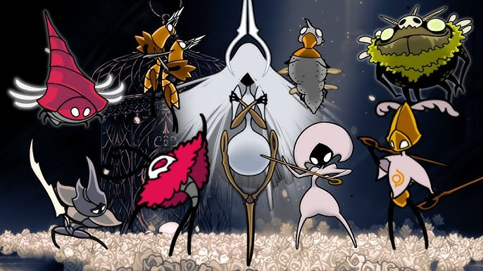

Habitantes de Pharloom
Durante sua jornada, Hornet encontrará aliados, rivais e figuras enigmáticas espalhadas pelas ruínas do reino.

Hornet
A protagonista de Hollow Knight: Silksong.
Ágil, veloz e extremamente habilidosa, Hornet utiliza linha e agulha para atravessar Pharloom.
Diferente do Cavaleiro original, Hornet possui voz própria, personalidade marcante e um estilo de combate muito mais agressivo.

Lace
Uma guerreira mascarada que surge repetidamente durante a jornada de Hornet.
Elegante e imprevisível, Lace parece conhecer muito mais sobre Pharloom do que aparenta.
Sua rivalidade com Hornet é um dos elementos centrais do jogo.

Shakra
Uma comerciante misteriosa encontrada nos mercados de Pharloom.
Ela auxilia Hornet oferecendo ferramentas, materiais e itens raros.
Apesar da aparência amigável, Shakra esconde segredos ligados ao reino.

Trobbio
Um inventor excêntrico obcecado por mecanismos antigos.
Suas máquinas peculiares ajudam Hornet a alcançar áreas escondidas e enfrentar novos perigos.

Huntress
Uma caçadora silenciosa encontrada nas regiões selvagens de Pharloom.
Seus encontros são breves, mas carregados de tensão e mistério.
Muitos habitantes do reino a consideram apenas uma lenda.
Os Ecos de Pharloom
Cada personagem encontrado por Hornet carrega fragmentos da história do reino.
Alguns oferecem ajuda. Outros escondem intenções obscuras.
